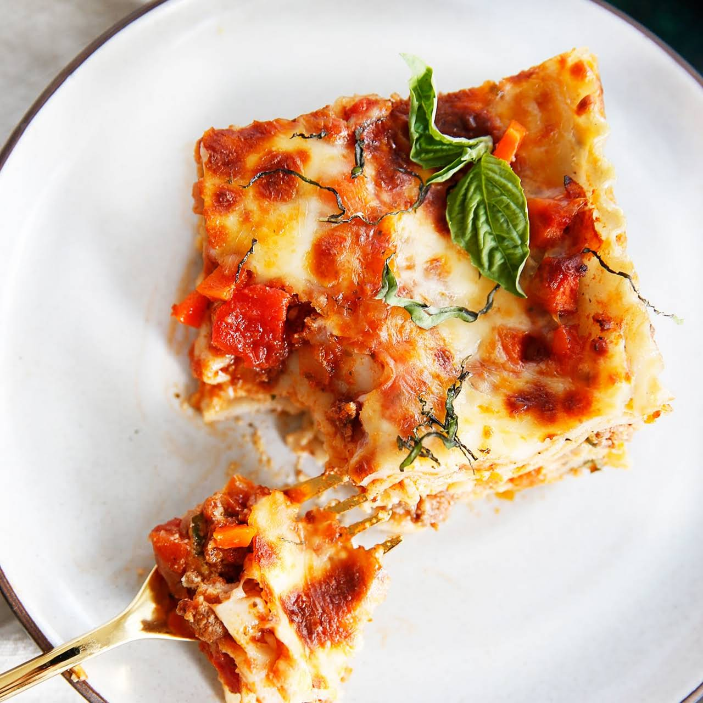

Lovely Lush Lasagna

A Classic in the Richard's home!
Fat Mince. Fat Cheese. Fat Pasta. Fat Martoes, Fat Bessymel. Lovely stuff!
ingrediants
- 500g Mince
- 500g Cheese
- 500g Pasta Sheets
- 500g Tin Tommies
- 500g Salt
Steps
- Fry that mince.
- Chuck in the Tomatoes and the Salt.
- Boil some water and get those sheets soft.
- Chuck the beefy marto mixture in a dish.
- Put in a cheeky bit of Bessamel.
- Layer some pasta.
- Probably best to do all that twice so it's abit thicker.
- Whack it in the oven for like half hour?